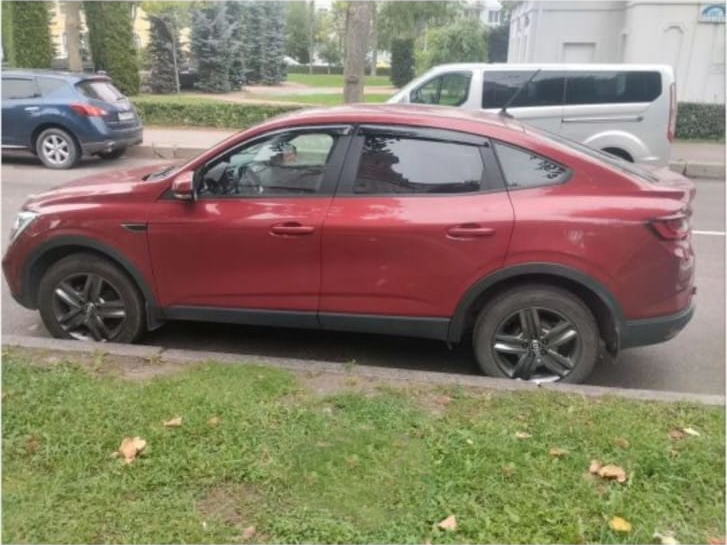

Комфортное путешествие на автомобиле Renault
Предлагаем индивидуальные туры на рыбалку и отдых по живописным местам Санкт-Петербурга и Ленинградской области. Поездки проводятся на комфортном автомобиле Renault с учетом ваших пожеланий по маршруту, продолжительности и видам отдыха.

Что входит в тур
- Индивидуальный подбор маршрута.
- Комфортный трансфер по Санкт-Петербургу и Ленинградской области.
- Посещение лучших мест для рыбалки.
- Остановки в живописных местах для отдыха и фотосъемки.
- Возможность совместить рыбалку с экскурсионной программой.
Курортная зона Санкт-Петербурга
Маршрут может включать посещение знаменитых курортных мест Финского залива:
- Сестрорецк
- Солнечное
- Репино
- Комарово
- Зеленогорск
Гостей ждут песчаные пляжи, сосновые леса, свежий морской воздух и красивые виды на побережье.
Дополнительные направления
По индивидуальному запросу возможны поездки в пригороды Санкт-Петербурга и другие интересные места Северо-Запада России.
Мраморный каньон Рускеала
Особой популярностью пользуется путешествие в горный парк «Рускеала» в Карелии. Главная достопримечательность парка — знаменитый Мраморный каньон с прозрачной водой и величественными мраморными скалами. Это одно из самых известных туристических мест региона.
Для кого подходит тур
- Любителям рыбалки.
- Семейным путешественникам.
- Туристам, желающим увидеть природу Северо-Запада России.
- Небольшим компаниям друзей.
Мы создаем маршрут специально под ваши интересы, чтобы поездка стала комфортной, интересной и запоминающейся.